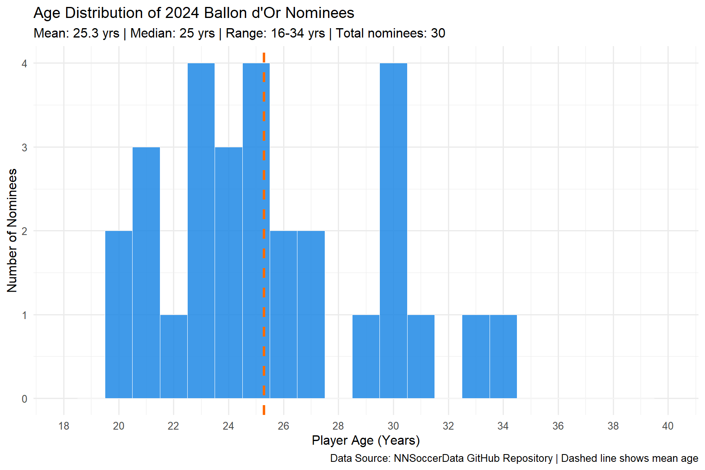
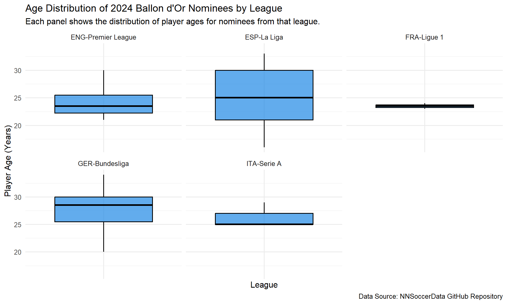
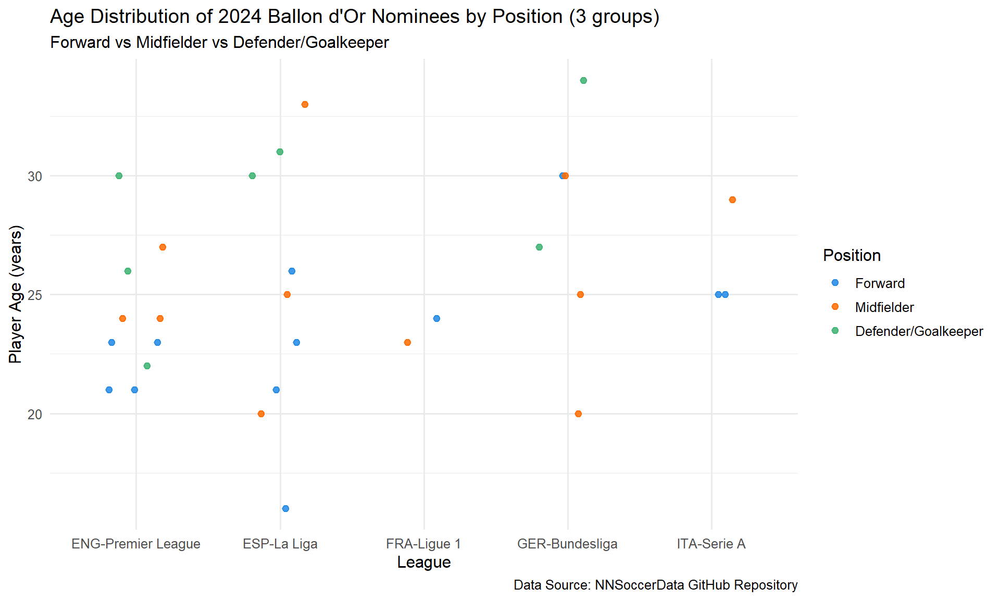

example_analysis
Protocol of Ballon d’Or?
The Ballon d’Or, French for “Golden Ball,” was first awarded in 1956 by France Football magazine. Originally a European-focused award, it has evolved into global soccer’s most prestigious individual honor. Today, it is widely regarded as the highest individual achievement in world football, representing the pinnacle of a player’s career.
Audience and Question
While the Ballon d’Or voting process involves media representatives and national team captains from around the world—making outcomes inherently subjective and sometimes seemingly random—the award’s prestige remains unquestioned. This very subjectivity creates an intriguing puzzle for soccer enthusiasts: are there underlying patterns or consistent criteria that predict Ballon d’Or success? This analysis aims to use statistical exploration to uncover potential protocols and patterns behind football’s most coveted individual prize(mainly revolving age).
Data Source and Attribution
This analysis utilizes the 2024 Ballon d’Or Nominees League Statistics dataset, which is publicly available on GitHub:
- Original Dataset: 2024 Ballon d’Or Nominees League Stats
- Repository: NNSoccerData Collection
- Data Collector: AshkanNS
The dataset contains comprehensive performance statistics for the 30 players nominated for the 2024 Ballon d’Or award, compiled from various league competitions.
Important⚠️ Analytical Disclaimer
This analysis focuses exclusively on the 2024 Ballon d’Or nominee data and therefore represents a single snapshot in time. While we can identify interesting patterns and relationships within this dataset, the findings may not fully capture the broader historical trends or predictive factors that influence Ballon d’Or voting across multiple seasons.
Data Dictionary
| Variable | Type | Description |
|---|---|---|
| age | Numeric | Player’s age in years at the time of the 2024 Ballon d’Or evaluation. Used to analyze age distribution across positions and leagues. |
| league | Categorical | The domestic league in which the player competed (e.g., ENG–Premier League, ESP–La Liga, ITA–Serie A). Used for grouping and faceting in visualizations. |
| pos | Categorical | Player’s listed position (e.g., FW, MF, DF, GK, or combinations such as FW,MF). Recoded into Forward, Midfielder, or Defender/Goalkeeper for analysis. |
Plot1:Age Distribution of 2024 Ballon d’Or Nominees
Plot2: Age Distribution of 2024 Ballon d’Or Nominees by League

Plot3:Age Distribution of 2024 Ballon d’Or Nominees by Position (3 groups)

Note
Note: Due to historical and tactical reasons, goalkeepers and defenders are grouped together in the visualization.
Both roles are traditionally considered part of a team’s defensive unit, sharing similar responsibilities in preventing goals and maintaining defensive structure.
This combined category reflects how these positions are often analyzed collectively in football data and performance studies.
Summary
Overall, the distribution of all nominees follow a uniform distribution, which fits a common sense that soccer is not a sport which performance heavily depending on the age. However, it changes when classified in positional categories: forwards, midfielders, and defenders/goalkeepers. Forwards tend to be concentrated in the early-to-mid 20s, reflecting the physical explosiveness and pace demanded in attacking roles. Midfielders show a slightly wider spread, with several players extending into their late 20s as experience and tactical awareness play a larger role. Defenders and goalkeepers exhibit the highest ages on average, aligning with the fact that these positions reward positional discipline, decision-making, and accumulated match experience.
Method
From tidyr/dply r:
mutate()
drop_na()
group_by()
summarize()
arrange()
From ggplot:
geom_histogram()
geom_boxplot()
geom_jitter()
sessionInfo()R version 4.5.1 (2025-06-13 ucrt)
Platform: x86_64-w64-mingw32/x64
Running under: Windows 11 x64 (build 26100)
Matrix products: default
LAPACK version 3.12.1
locale:
[1] LC_COLLATE=English_United States.utf8
[2] LC_CTYPE=English_United States.utf8
[3] LC_MONETARY=English_United States.utf8
[4] LC_NUMERIC=C
[5] LC_TIME=English_United States.utf8
time zone: America/New_York
tzcode source: internal
attached base packages:
[1] stats graphics grDevices utils datasets methods base
other attached packages:
[1] DT_0.34.0 knitr_1.50 lubridate_1.9.4 forcats_1.0.0
[5] stringr_1.5.2 dplyr_1.1.4 purrr_1.1.0 readr_2.1.5
[9] tidyr_1.3.1 tibble_3.3.0 ggplot2_4.0.0 tidyverse_2.0.0
loaded via a namespace (and not attached):
[1] bit_4.6.0 gtable_0.3.6 jsonlite_2.0.0 crayon_1.5.3
[5] compiler_4.5.1 tidyselect_1.2.1 parallel_4.5.1 scales_1.4.0
[9] yaml_2.3.10 fastmap_1.2.0 R6_2.6.1 labeling_0.4.3
[13] generics_0.1.4 curl_7.0.0 htmlwidgets_1.6.4 pillar_1.11.1
[17] RColorBrewer_1.1-3 tzdb_0.5.0 rlang_1.1.6 stringi_1.8.7
[21] xfun_0.53 S7_0.2.0 bit64_4.6.0-1 timechange_0.3.0
[25] cli_3.6.5 withr_3.0.2 magrittr_2.0.3 digest_0.6.37
[29] grid_4.5.1 vroom_1.6.5 rstudioapi_0.17.1 hms_1.1.3
[33] lifecycle_1.0.4 vctrs_0.6.5 evaluate_1.0.5 glue_1.8.0
[37] farver_2.1.2 rmarkdown_2.29 tools_4.5.1 pkgconfig_2.0.3
[41] htmltools_0.5.8.1